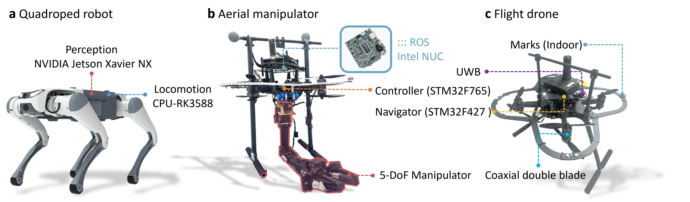

<!DOCTYPE html>
<html lang="en">
<head>
  <meta charset="utf-8">
  <meta name="viewport" content="width=device-width, initial-scale=1">
  
  <!-- Primary Meta Tags -->
  <!-- TODO: Replace with your paper title and author names -->
  <meta name="title" content="PhyFilter">
  <!-- TODO: Write a compelling 150-160 character description of your research -->
  <meta name="description" content="BRIEF_DESCRIPTION_OF_YOUR_RESEARCH_CONTRIBUTION_AND_FINDINGS">
  <!-- TODO: Add 5-10 relevant keywords for your research area -->
  <meta name="keywords" content="KEYWORD1, KEYWORD2, KEYWORD3, machine learning, computer vision, AI">
  <!-- TODO: List all authors -->
  <meta name="author" content="FIRST_AUTHOR_NAME, SECOND_AUTHOR_NAME">
  <meta name="robots" content="index, follow">
  <meta name="language" content="English">
  
  <!-- Open Graph / Facebook -->
  <meta property="og:type" content="article">
  <!-- TODO: Replace with your institution or lab name -->
  <meta property="og:site_name" content="INSTITUTION_OR_LAB_NAME">
  <!-- TODO: Same as paper title above -->
  <meta property="og:title" content="PAPER_TITLE">
  <!-- TODO: Same as description above -->
  <meta property="og:description" content="BRIEF_DESCRIPTION_OF_YOUR_RESEARCH_CONTRIBUTION_AND_FINDINGS">
  <!-- TODO: Replace with your actual website URL -->
  <meta property="og:url" content="https://YOUR_DOMAIN.com/YOUR_PROJECT_PAGE">
  <!-- TODO: Create a 1200x630px preview image and update path -->
  <meta property="og:image" content="https://YOUR_DOMAIN.com/static/images/social_preview.png">
  <meta property="og:image:width" content="1200">
  <meta property="og:image:height" content="630">
  <meta property="og:image:alt" content="PAPER_TITLE - Research Preview">
  <meta property="article:published_time" content="2024-01-01T00:00:00.000Z">
  <meta property="article:author" content="FIRST_AUTHOR_NAME">
  <meta property="article:section" content="Research">
  <meta property="article:tag" content="KEYWORD1">
  <meta property="article:tag" content="KEYWORD2">

  <!-- Twitter -->
  <meta name="twitter:card" content="summary_large_image">
  <!-- TODO: Replace with your lab/institution Twitter handle -->
  <meta name="twitter:site" content="@YOUR_TWITTER_HANDLE">
  <!-- TODO: Replace with first author's Twitter handle -->
  <meta name="twitter:creator" content="@AUTHOR_TWITTER_HANDLE">
  <!-- TODO: Same as paper title above -->
  <meta name="twitter:title" content="PAPER_TITLE">
  <!-- TODO: Same as description above -->
  <meta name="twitter:description" content="BRIEF_DESCRIPTION_OF_YOUR_RESEARCH_CONTRIBUTION_AND_FINDINGS">
  <!-- TODO: Same as social preview image above -->
  <meta name="twitter:image" content="https://YOUR_DOMAIN.com/static/images/social_preview.png">
  <meta name="twitter:image:alt" content="PAPER_TITLE - Research Preview">

  <!-- Academic/Research Specific -->
  <meta name="citation_title" content="PAPER_TITLE">
  <meta name="citation_author" content="FIRST_AUTHOR_LAST, FIRST_AUTHOR_FIRST">
  <meta name="citation_author" content="SECOND_AUTHOR_LAST, SECOND_AUTHOR_FIRST">
  <meta name="citation_publication_date" content="2024">
  <meta name="citation_conference_title" content="CONFERENCE_NAME">
  <meta name="citation_pdf_url" content="https://YOUR_DOMAIN.com/static/pdfs/paper.pdf">
  
  <!-- Additional SEO -->
  <meta name="theme-color" content="#2563eb">
  <meta name="msapplication-TileColor" content="#2563eb">
  <meta name="apple-mobile-web-app-capable" content="yes">
  <meta name="apple-mobile-web-app-status-bar-style" content="default">
  
  <!-- Preconnect for performance -->
  <link rel="preconnect" href="https://fonts.googleapis.com">
  <link rel="preconnect" href="https://fonts.gstatic.com" crossorigin>
  <link rel="preconnect" href="https://ajax.googleapis.com">
  <link rel="preconnect" href="https://documentcloud.adobe.com">
  <link rel="preconnect" href="https://cdn.jsdelivr.net">


  <!-- TODO: Replace with your paper title and authors -->
  <title>PhyFilter</title>
  
  <!-- Favicon and App Icons -->
  <link rel="icon" type="image/x-icon" href="static/images/favicon.ico">
  <link rel="apple-touch-icon" href="static/images/favicon.ico">
  
  <!-- Critical CSS - Load synchronously -->
  <link rel="stylesheet" href="static/css/bulma.min.css">
  <link rel="stylesheet" href="static/css/index.css">
  
  <!-- Non-critical CSS - Load asynchronously -->
  <link rel="preload" href="static/css/bulma-carousel.min.css" as="style" onload="this.onload=null;this.rel='stylesheet'">
  <link rel="preload" href="static/css/bulma-slider.min.css" as="style" onload="this.onload=null;this.rel='stylesheet'">
  <link rel="preload" href="static/css/fontawesome.all.min.css" as="style" onload="this.onload=null;this.rel='stylesheet'">
  <link rel="preload" href="https://cdn.jsdelivr.net/gh/jpswalsh/academicons@1/css/academicons.min.css" as="style" onload="this.onload=null;this.rel='stylesheet'">
  
  <!-- Fallback for browsers that don't support preload -->
  <noscript>
    <link rel="stylesheet" href="static/css/bulma-carousel.min.css">
    <link rel="stylesheet" href="static/css/bulma-slider.min.css">
    <link rel="stylesheet" href="static/css/fontawesome.all.min.css">
    <link rel="stylesheet" href="https://cdn.jsdelivr.net/gh/jpswalsh/academicons@1/css/academicons.min.css">
  </noscript>
  
  <!-- Fonts - Optimized loading -->
  <link href="https://fonts.googleapis.com/css2?family=Inter:wght@400;500;600;700;800&display=swap" rel="stylesheet">
  
  <!-- Defer non-critical JavaScript -->
  <script defer src="https://ajax.googleapis.com/ajax/libs/jquery/3.5.1/jquery.min.js"></script>
  <script defer src="https://documentcloud.adobe.com/view-sdk/main.js"></script>
  <script defer src="static/js/fontawesome.all.min.js"></script>
  <script defer src="static/js/bulma-carousel.min.js"></script>
  <script defer src="static/js/bulma-slider.min.js"></script>
  <script defer src="static/js/index.js"></script>
  
  <!-- Structured Data for Academic Papers -->
  <script type="application/ld+json">
  {
    "@context": "https://schema.org",
    "@type": "ScholarlyArticle",
    "headline": "PAPER_TITLE",
    "description": "BRIEF_DESCRIPTION_OF_YOUR_RESEARCH_CONTRIBUTION_AND_FINDINGS",
    "author": [
      {
        "@type": "Person",
        "name": "FIRST_AUTHOR_NAME",
        "affiliation": {
          "@type": "Organization",
          "name": "INSTITUTION_NAME"
        }
      },
      {
        "@type": "Person",
        "name": "SECOND_AUTHOR_NAME",
        "affiliation": {
          "@type": "Organization",
          "name": "INSTITUTION_NAME"
        }
      }
    ],
    "datePublished": "2024-01-01",
    "publisher": {
      "@type": "Organization",
      "name": "CONFERENCE_OR_JOURNAL_NAME"
    },
    "url": "https://YOUR_DOMAIN.com/YOUR_PROJECT_PAGE",
    "image": "https://YOUR_DOMAIN.com/static/images/social_preview.png",
    "keywords": ["KEYWORD1", "KEYWORD2", "KEYWORD3", "machine learning", "computer vision"],
    "abstract": "FULL_ABSTRACT_TEXT_HERE",
    "citation": "BIBTEX_CITATION_HERE",
    "isAccessibleForFree": true,
    "license": "https://creativecommons.org/licenses/by/4.0/",
    "mainEntity": {
      "@type": "WebPage",
      "@id": "https://YOUR_DOMAIN.com/YOUR_PROJECT_PAGE"
    },
    "about": [
      {
        "@type": "Thing",
        "name": "RESEARCH_AREA_1"
      },
      {
        "@type": "Thing", 
        "name": "RESEARCH_AREA_2"
      }
    ]
  }
  </script>
  
  <!-- Website/Organization Structured Data -->
  <script type="application/ld+json">
  {
    "@context": "https://schema.org",
    "@type": "Organization",
    "name": "INSTITUTION_OR_LAB_NAME",
    "url": "https://YOUR_INSTITUTION_WEBSITE.com",
    "logo": "https://YOUR_DOMAIN.com/static/images/favicon.ico",
    "sameAs": [
      "https://twitter.com/YOUR_TWITTER_HANDLE",
      "https://github.com/YOUR_GITHUB_USERNAME"
    ]
  }
  </script>
</head>
<body>


 

  <main id="main-content">
  <section class="hero">
    <div class="hero-body">
      <div class="container is-max-desktop">
        <div class="columns is-centered">
          <div class="column has-text-centered">
            <!-- TODO: Replace with your paper title -->
            <h1 class="title is-1 publication-title">Physics filtering favors the generalization of robot learning</h1>
            <div class="is-size-5 publication-authors">
              <!-- TODO: Replace with your paper authors and their personal links -->
              <span class="author-block">
                <a href="https://jiajindou.github.io/" target="_blank">Jindou Jia</a><sup>1&dagger;</sup>,</span>
                <span class="author-block">
                  <a href="SECOND AUTHOR PERSONAL LINK" target="_blank">Shixuan Han</a><sup>2&dagger;</sup>,</span>
                  <span class="author-block">
                    <a href="https://scoardyy.github.io/mengwang.github.io/" target="_blank">Meng Wang</a><sup>2&dagger;</sup>,</span>
                    <span class="author-block">
                    <a href="https://reagan1311.github.io/" target="_blank">Gen Li</a><sup>1</sup>,</span>
                    <span class="author-block">
                    <a href="https://zzhanyoung.github.io/" target="_blank">Zihan Yang</a><sup>3</sup>,</span><span class="author-block">
                    <a href="https://orcid.org/0000-0002-7427-8772" target="_blank">Sicheng Zhou</a><sup>4</sup>,</span><span class="author-block">
                    <a href="https://scholar.google.com/citations?hl=zh-CN&user=c0MaejIAAAAJ" target="_blank">Kexin Guo</a><sup>3*</sup>,</span><span class="author-block">
                    <a href="https://scholar.google.com/citations?user=V25k08UAAAAJ&hl=zh-CN" target="_blank">Jianfei Yang</a><sup>1*</sup>,</span><span class="author-block">
                    <a href="https://scholar.google.com/citations?user=6UgtuZ8AAAAJ&hl=zh-CN&oi=ao" target="_blank">Xiang Yu</a><sup>2*</sup>,</span><span class="author-block">
                    <a href="https://scholar.google.com/citations?user=IxO-SDwAAAAJ&hl=zh-CN" target="_blank">Lei Guo</a><sup>2*</sup>
                  </span>
                  </div>

                  <div class="is-size-5 publication-authors">
                    <!-- TODO: Replace with your institution and conference/journal info -->
                    <span class="author-block"> <sup>1</sup>School of Mechanical and Aerospace Engineering, Nanyang Technological University, 50 Nanyang Avenue, 639798, Singapore.</span>
                     <span class="author-block"> <sup>2</sup>School of Automation Science and Electrical Engineering, Beihang University, Xueyuan Road, Beijing, 100191, China.</span>
                    <span class="author-block"> <sup>3</sup>School of Aeronautic Science and Engineering, Beihang University, Xueyuan Road, Beijing, 100191, China.</span>
                     <span class="author-block"> <sup>4</sup>School of Electrical and Electronic Engineering, Nanyang Technological University, 50 Nanyang Avenue, 639798, Singapore.</span>
                    <!-- TODO: Remove this line if no equal contribution -->
                    <span class="eql-cntrb"><small><br><sup>&dagger</sup>Indicates Equal Contribution</small></span>
                  </div>

                  <div class="column has-text-centered">
                    <div class="publication-links">
                         <!-- TODO: Update with your arXiv paper ID -->
                      <span class="link-block">
                        <a href="https://github.com/ScoardYY/Physics-filtering/tree/main" target="_blank"
                        class="external-link button is-normal is-rounded is-dark">
                        <span class="icon">
                          <i class="fas fa-file-pdf"></i>
                        </span>
                        <span>Paper</span>
                      </a>
                    </span>

                    <!-- TODO: Add your supplementary material PDF or remove this section -->
                    <span class="link-block">
                      <a href="https://github.com/ScoardYY/Physics-filtering/tree/main" target="_blank"
                      class="external-link button is-normal is-rounded is-dark">
                      <span class="icon">
                        <i class="fas fa-file-pdf"></i>
                      </span>
                      <span>Supplementary</span>
                    </a>
                  </span>

                  <!-- TODO: Replace with your GitHub repository URL -->
                  <span class="link-block">
                    <a href="https://github.com/ScoardYY/Physics-filtering/tree/main" target="_blank"
                    class="external-link button is-normal is-rounded is-dark">
                    <span class="icon">
                      <i class="fab fa-github"></i>
                    </span>
                    <span>Code</span>
                  </a>
                </span>
            </div>
          </div>
        </div>
      </div>
    </div>
  </div>
</section>

<!-- Image carousel -->
<section class="hero is-small py-4">
  <div class="hero-body px-2"> <!-- 减小水平内边距：px-2 -->
   <div class="container is-max-desktop">
      <div id="results-carousel" class="carousel results-carousel">
       <div class="item">
        <!-- TODO: Replace with your research result images -->
        
        <!-- TODO: Replace with description of this result -->
        <h2 class="subtitle" style="text-align: justify; font-weight: normal;">
            Overview of the presented PhyFilter. a The learning output of RL or SL is enhanced by a physics-informed filter which helps narrow the large generalization gap. b The implementation details of the PhyFilter, which is lightweight and analytic. More theoretical details refer to Methods “Filtering learning residual”. c The PhyFilter is validated across four distinct empirical examples. 
            <span style="font-weight: bold;">i</span> Policy learning for quadruped locomotion. The quadruped is trained in a simplified simulational environment; with the PhyFilter, it generalizes to unseen velocity, payload, and real-world terrains. 
            <span style="font-weight: bold;">ii</span> Dynamical learning for drone maneuvering flight. A specific machine learning technique learns mass uncertainty, while the PhyFilter helps handle unseen wind disturbance. 
            <span style="font-weight: bold;">iii</span> Dynamical learning for aerial manipulation. A designated machine learning technique learns coupling uncertainties between drone and manipulator, with the PhyFilter aiding in the handling of unseen wind disturbances and mass uncertainties. 
            <span style="font-weight: bold;">iv</span> Kinematics learning for acceleration perception. An NN-based differentiator with the input of velocity sequence, is trained to obtain the real-time acceleration for a drone. The PhyFilter can favor its generalization to inputs with distribution shift.
          </h2>
      </div>
      <div class="item">
        <!-- Your image here -->
        
        <h2 class="subtitle has-text-centered">
         Experimental results of the quadruped example.
       </h2>
    <div class="item">
        <!-- Your image here -->
        
        <h2 class="subtitle has-text-centered">
         The employed hardwares.
       </h2>
     </div>
  </div>
</div>
</div>
</section>
<!-- End image carousel -->

<!-- Paper abstract -->
<section class="section hero is-light">
  <div class="container is-max-desktop">
    <div class="columns is-centered has-text-centered">
      <div class="column is-nine-tenths">
        <h2 class="title is-3">Abstract</h2>
        <div class="content has-text-justified">
          <!-- TODO: Replace with your paper abstract -->
          <p>
            Living beings exhibit extraordinary adaptability to unseen environments due to their innate exquisite structures and acquired experience accumulation. Endowing robots with such generalization capabilities can facilitate their deployment
in dynamic real-world settings. Prevailing solutions typically resort to the data scaling law, empirically proven effective in large language models. Unfortunately, acquiring real-world training data of comparable scale for robots proves challenging, time-consuming, and expensive. Here we show that, even with limited
training data, the robotic generalization can be dramatically improved by filtering learning outputs with accessible physical knowledge. This physics-informed filter, named PhyFilter, is achieved by correcting learning outputs via established differential structures and real-time state feedback, seamlessly performing the real-time compensation of learning residuals. We also introduce an autolearning algorithm to explore optimal parameters of the PhyFilter. We validate
the PhyFilter across four representative robotic scenarios using reinforcement learning and supervised learning. Notably, our results suggest that the PhyFilter enables quadrupeds to generalize to unseen terrains, payloads, and velocities;
drones to maneuver under unseen wind disturbances; aerial manipulators to precisely capture a pen under unseen wind disturbances and mass uncertainties; and
acceleration differentiators to handle inputs with distribution shift
          </p>
        </div>
      </div>
    </div>
  </div>
</section>
<!-- End paper abstract -->


<!-- Video carousel -->
<section class="hero is-small">
  <div class="hero-body">
    <div class="container">
      <h2 class="title is-3">Quadruped Experiments </h2>
      <div id="results-carousel" class="carousel results-carousel">
        <div class="item item-video1">
          <!-- TODO: Add poster image for better preview -->
          <video poster="" id="video1" controls muted loop height="100%" preload="metadata">
            <!-- Your video file here -->
            <source src="static/videos/flagstone.mp4" type="video/mp4">
          </video>
          <h2 class="subtitle has-text-centered">
           <!--flagstone. The high-resolution Video can be found in https://www.youtube.com/embed/JkaxUblCGz0-->
        </h2>
        </div>
        <div class="item item-video2">
          <!-- TODO: Add poster image for better preview -->
          <video poster="" id="video2" controls muted loop height="100%" preload="metadata">
            <!-- Your video file here -->
            <source src="static/videos/gravel road.mp4" type="video/mp4">
          </video>
          <h2 class="subtitle has-text-centered">
          <!--gravel road. The high-resolution Video can be found in https://www.youtube.com/embed/JkaxUblCGz0-->
        </h2>
        </div>
        <div class="item item-video3">
          <!-- TODO: Add poster image for better preview -->
          <video poster="" id="video3" controls muted loop height="100%" preload="metadata">
            <!-- Your video file here -->
            <source src="static/videos/lawn.mp4" type="video/mp4">
          </video>
          <h2 class="subtitle has-text-centered">
           <!--lawn. The high-resolution Video can be found in https://www.youtube.com/embed/JkaxUblCGz0-->
        </h2>
        </div>
        <div class="item item-video3">
          <!-- TODO: Add poster image for better preview -->
          <video poster="" id="video3" controls muted loop height="100%" preload="metadata">
            <!-- Your video file here -->
            <source src="static/videos/sandy ground.mp4" type="video/mp4">
          </video>
          <h2 class="subtitle has-text-centered">
           <!--sandy ground. The high-resolution Video can be found in https://www.youtube.com/embed/JkaxUblCGz0-->
        </h2>
        </div>
      </div>
    </div>
  </div>
</section>
<!-- End video carousel -->

<!-- Video carousel -->
<section class="hero is-small">
  <div class="hero-body">
    <div class="container">
      <h2 class="title is-3">Quadruped Simulations </h2>
      <div id="results-carousel" class="carousel results-carousel">
        <div class="item item-video1">
          <!-- TODO: Add poster image for better preview -->
          <video poster="" id="video1" controls muted loop height="100%" preload="metadata">
            <!-- Your video file here -->
            <source src="static/videos/OOD payload.mp4" type="video/mp4">
          </video>
          <h2 class="subtitle has-text-centered">
           <!--OOD payload. The high-resolution Video can be found in https://www.youtube.com/embed/JkaxUblCGz0-->
        </h2>
        </div>
        <div class="item item-video2">
          <!-- TODO: Add poster image for better preview -->
          <video poster="" id="video2" controls muted loop height="100%" preload="metadata">
            <!-- Your video file here -->
            <source src="static/videos/OOD speed.mp4" type="video/mp4">
          </video>
          <h2 class="subtitle has-text-centered">
           <!--OOD speed. The high-resolution Video can be found in https://www.youtube.com/embed/JkaxUblCGz0-->
        </h2>
        </div>
        <div class="item item-video3">
          <!-- TODO: Add poster image for better preview -->
          <video poster="" id="video3" controls muted loop height="100%" preload="metadata">
            <!-- Your video file here -->
            <source src="static/videos/training performance.mp4" type="video/mp4">
          </video>
          <h2 class="subtitle has-text-centered">
           <!--training performance. The high-resolution Video can be found in https://www.youtube.com/embed/JkaxUblCGz0-->
        </h2>
        </div>
        <div class="item item-video3">
          <!-- TODO: Add poster image for better preview -->
          <video poster="" id="video3" controls muted loop height="100%" preload="metadata">
            <!-- Your video file here -->
            <source src="static/videos/unseen terrain traversal.mp4" type="video/mp4">
          </video>
          <h2 class="subtitle has-text-centered">
          <!-- unseen terrain traversal. The high-resolution Video can be found in https://www.youtube.com/embed/JkaxUblCGz0-->
        </h2>
        </div>
      </div>
    </div>
  </div>
</section>
<!-- End video carousel -->

<!-- Video carousel -->
<section class="hero is-small">
  <div class="hero-body">
    <div class="container">
      <h2 class="title is-3">Drone Experiments </h2>
      
        <div class="item item-video1">
          <!-- TODO: Add poster image for better preview -->
          <video poster="" id="video1" controls muted loop height="100%" preload="metadata">
            <!-- Your video file here -->
            <source src="static/videos/drone.mp4" type="video/mp4">
          </video>
          <h2 class="subtitle has-text-centered">
          <!-- Drone flight. The high-resolution Video can be found in https://www.youtube.com/embed/JkaxUblCGz0-->
        </h2>
       
      </div>
    </div>
  </div>
</section>
<!-- End video carousel -->

    
<!-- Video carousel -->
<section class="hero is-small">
  <div class="hero-body">
    <div class="container">
      <h2 class="title is-3">Aerial Manipulation Experiments</h2>
      <div id="results-carousel" class="carousel results-carousel">
        <div class="item item-video1">
          <!-- TODO: Add poster image for better preview -->
          <video poster="" id="video1" controls muted loop height="100%" preload="metadata">
            <!-- Your video file here -->
            <source src="static/videos/baseline.mp4" type="video/mp4">
          </video>
          <h2 class="subtitle has-text-centered">
           <!--Baseline. The high-resolution Video can be found in https://www.youtube.com/embed/JkaxUblCGz0-->
        </h2>
        </div>
        <div class="item item-video2">
          <!-- TODO: Add poster image for better preview -->
          <video poster="" id="video2" controls muted loop height="100%" preload="metadata">
            <!-- Your video file here -->
            <source src="static/videos/SEER-I.mp4" type="video/mp4">
          </video>
          <h2 class="subtitle has-text-centered">
           <!--SEER-I. The high-resolution Video can be found in https://www.youtube.com/embed/JkaxUblCGz0-->
        </h2>
        </div>
        <div class="item item-video3">
          <!-- TODO: Add poster image for better preview -->
          <video poster="" id="video3" controls muted loop height="100%" preload="metadata">
            <!-- Your video file here -->
            <source src="static/videos/phyfilter.mp4" type="video/mp4">
          </video>
          <h2 class="subtitle has-text-centered">
           <!--phyfilter. The high-resolution Video can be found in https://www.youtube.com/embed/JkaxUblCGz0-->
        </h2>
        </div>
      </div>
    </div>
  </div>
</section>
<!-- End video carousel -->
    


<!-- Contact Section -->
<section class="section" id="Contact">
  <div class="container is-max-desktop content">
    <div class="contact-header">
      <h2 class="title">Contact</h2>
    </div>
    <p>If you have any questions, please contact us. jdjiabuaa@126.com; mwangbuaa@126.com</p>
  </div>
</section>
<!-- End Contact Section -->


  <footer class="footer">
  <div class="container">
    <div class="columns is-centered">
      <div class="column is-8">
        <div class="content">

          <p>
            This page was built using the <a href="https://github.com/eliahuhorwitz/Academic-project-page-template" target="_blank">Academic Project Page Template</a> which was adopted from the <a href="https://nerfies.github.io" target="_blank">Nerfies</a> project page.
            You are free to borrow the source code of this website, we just ask that you link back to this page in the footer. <br> This website is licensed under a <a rel="license"  href="http://creativecommons.org/licenses/by-sa/4.0/" target="_blank">Creative
            Commons Attribution-ShareAlike 4.0 International License</a>.
          </p>

        </div>
      </div>
    </div>
  </div>
</footer>

<!-- Statcounter tracking code -->
  
<!-- You can add a tracker to track page visits by creating an account at statcounter.com -->

    <!-- End of Statcounter Code -->

  </body>
  </html>
